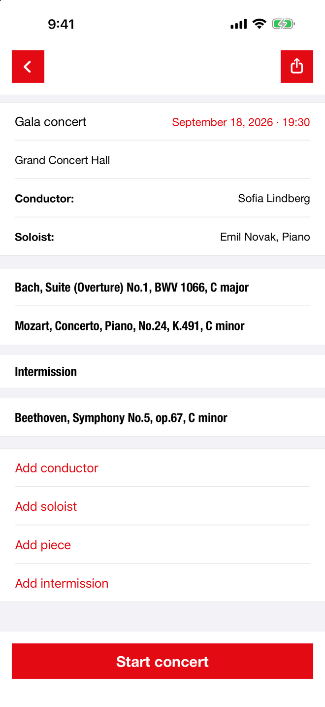
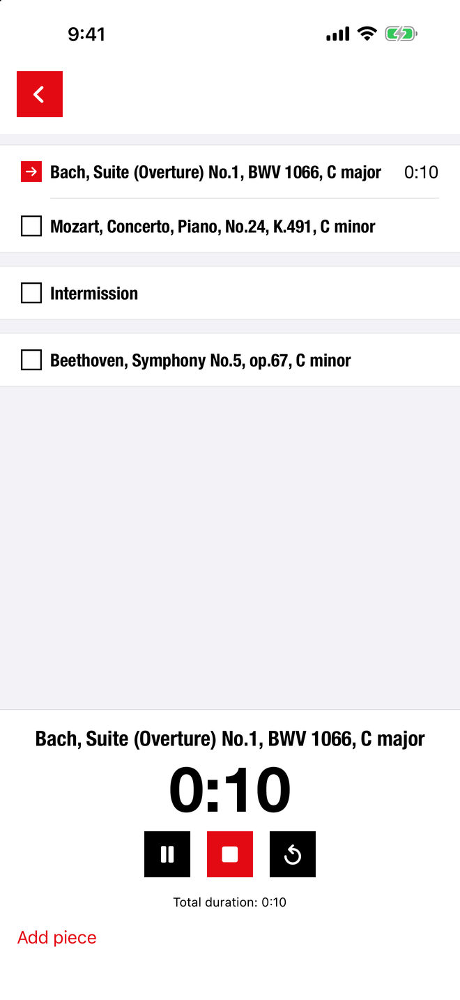
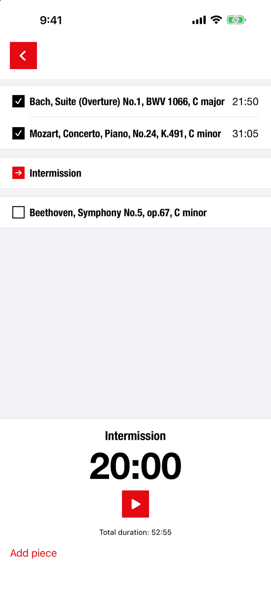
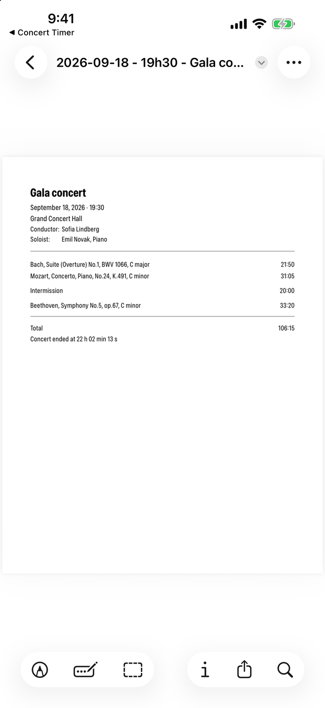

A timing tool for orchestra librarians and personnel managers. Build the program, time each piece as it is played, and share a PDF of the actual timings moments after the final bow.
Free, and it stays free.



What it does
Concert Timer was written backstage, for the person holding the stopwatch. It does the small number of things that job actually requires — and it does them in the dark, in a hurry, without asking you to think about the app.
The timing sheet
The personnel manager needs the timings tonight; the archivist needs them tomorrow. When the concert ends the PDF is already written — dated, titled, and set in the same quiet typography as the app.
Share it by mail, message or AirDrop without leaving the screen.

Languages
Not a dictionary's words but the ones used backstage — Stimmton, viritysääni, nota di accordatura. If something reads wrong in your language, write to me and I'll correct it.
Support
Questions, suggestions, or something that went wrong on a concert night? Write to michelleonard@mac.com. I read every message and reply personally.
Concert Timer collects no data whatsoever. Everything you enter stays on your device — see the privacy policy.